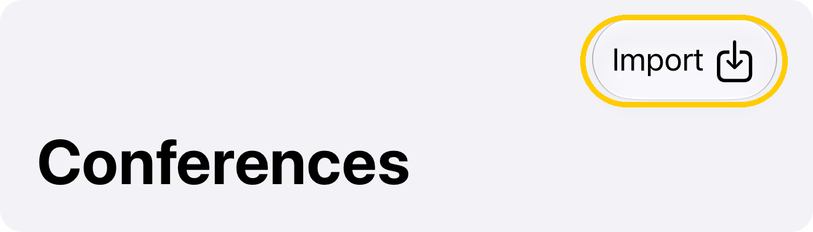
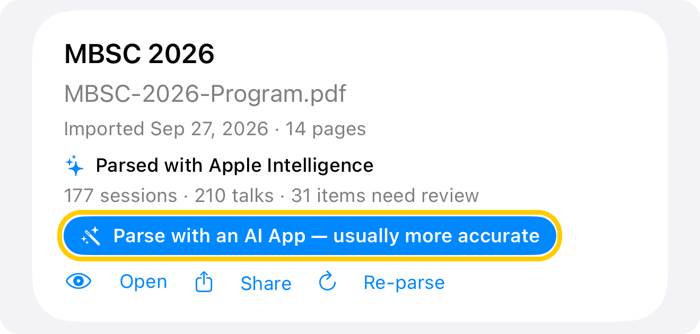
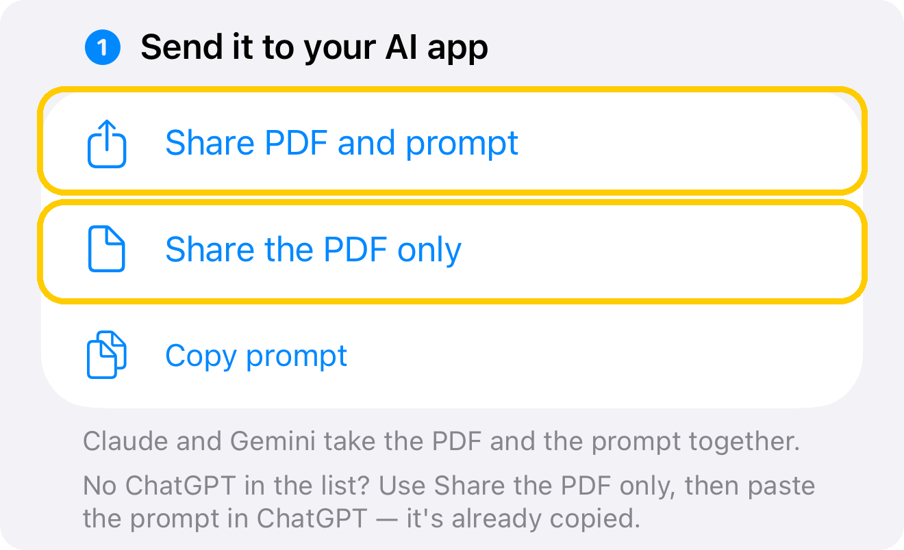
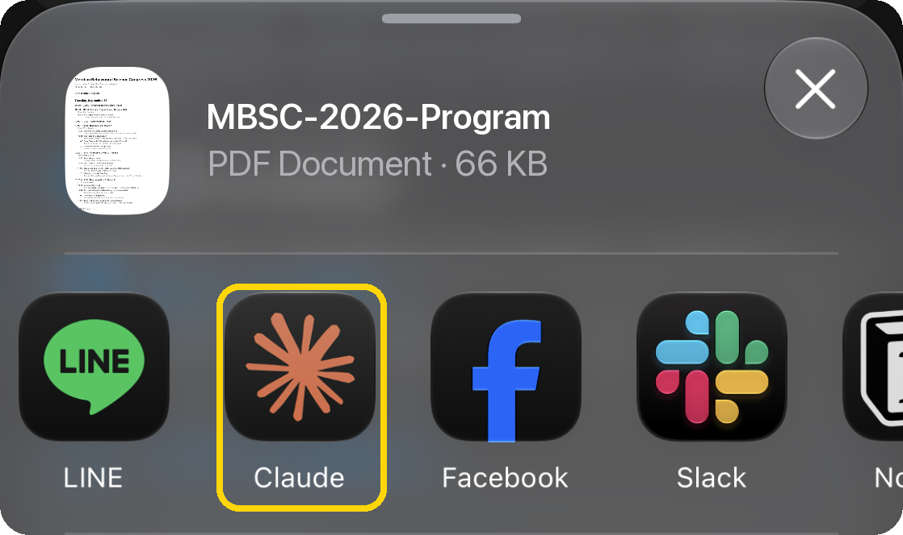
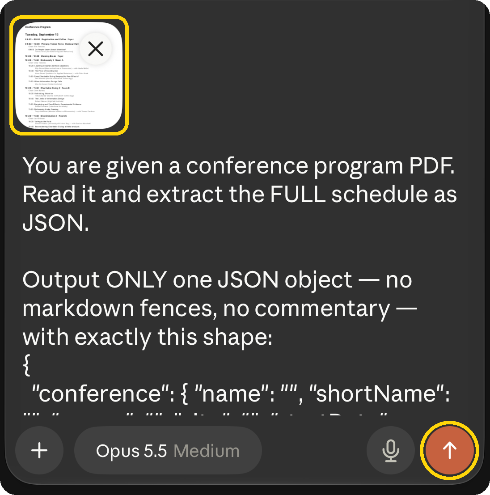
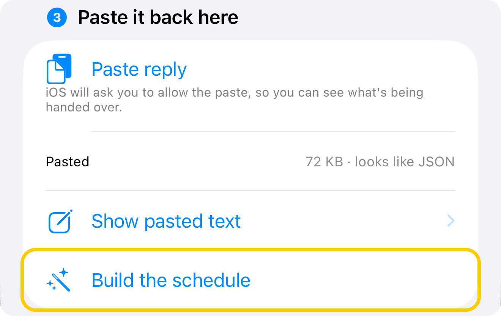
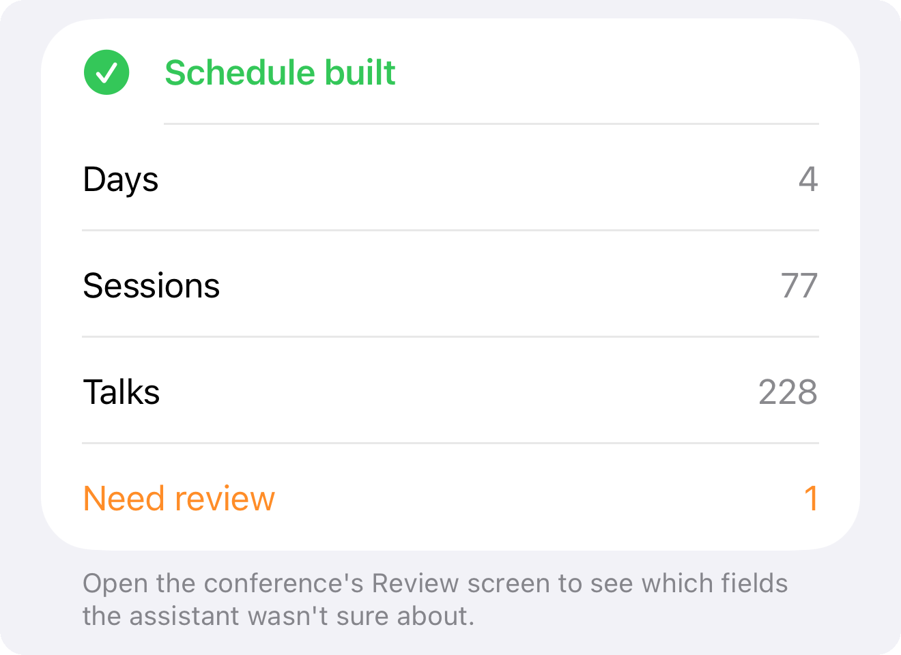

.acadenda
Open Scholarship Conference 2027
2 days · 6 agenda items · 5 talks · 2 maps
The full official exchange format, with a format version, export time and stable UUIDs.

ACADENDA / ABOUT 3 MINUTES · NO API KEY
Acadenda parses programs on your device. For programs with a complicated layout, an AI app such as ChatGPT, Claude or Gemini usually does better. It takes about three minutes and needs no API key — just the AI app you already use.
Screenshots use Claude and a fictional MBSC 2026 program. Select any screenshot to view the full image.
On the Conference tab, tap Import at the top right, then ＋, and choose the organiser's program PDF. Acadenda parses it once on its own.

When parsing finishes, tap Parse with an AI App under the PDF. If the built-in parser was used or the result looks thin, the button is right there in blue.

Tap Share PDF and prompt and pick your AI app. The PDF is attached, the prompt goes in as the message, and the prompt is copied as well. Using ChatGPT? Tap Share the PDF only instead — ChatGPT doesn't appear when the prompt is shared with the PDF.


Check that both the PDF and the prompt are in the message box, then send. If only the PDF arrived — as it does with ChatGPT — paste the prompt into the message box.

The AI replies with a long block of JSON — you don't need to read it. When it finishes, use the Copy button under the reply. If it stops partway, type “continue” and copy all of it.

Back in Acadenda, tap Paste. You'll see the size of the reply and “looks like JSON”. Then tap Build the schedule.

You'll see how many days, sessions and talks were found. Anything marked Needs review can be checked against the original PDF on the conference's Review screen.

DIRECT IMPORT · QR CODE / LINK
Scan either QR code below to import a fictional conference with two maps. Both the .acadenda and .json samples include a Level 1 venue plan and a campus transport map, so you can try schedule import and conference maps together.
Already imported this sample? Choose to update the existing conference after previewing, then open Maps. An internet connection is needed to load the images for the first time.


Both maps are original fictional diagrams, not real locations. PNG, 1800 × 1200 pixels, under 100 KB each.
.acadenda
2 days · 6 agenda items · 5 talks · 2 maps
The full official exchange format, with a format version, export time and stable UUIDs.
.json
1 day · 4 agenda items · 4 talks · 2 maps
A compact, compatible JSON format that can also be imported and followed at its source URL.

Each QR code contains the complete HTTPS file URL. Both URLs return the schedule file directly. After adding from a link, Acadenda also follows that URL for program updates.
NEED A HAND?
Usually the copy wasn't the whole reply. Use the Copy button under the reply rather than selecting text; if it stopped partway, type “continue” first.
ChatGPT, Claude or Gemini all work. A recent model that reads PDFs gives the best results.
Acadenda is free to use. Optional in-app purchases let you leave a tip to support my work and the app's continued development. Your support is always welcome! Whether the AI app charges depends on your plan.
Acadenda explains parsing errors. If the reply is incomplete, ask the AI to “continue”. If the JSON is invalid, ask it to output only valid JSON again; the error message includes the location of the problem.